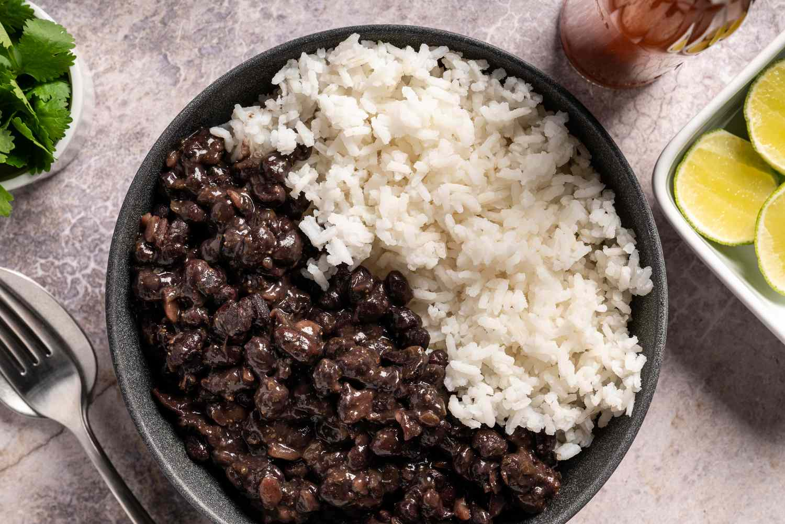

Rice and Beans, Steven Style

Description
Do you like rice? Do you like beans? Do you like eating cheap, easy, and healthy?
If you answered yes to any of the above questions, oh boy, have I got the recipe for you.
This recipe makes white rice and black beans, with some added goodies to elevate it above your standard microwave fare.
If it's not easy, I wouldn't make it, so rest assured you can too.
Ingredients
- ~15 oz. can black beans
- 1/2 cup white rice uncooked or 1 1/4 cup white rice cooked
- 1-5 cloves garlic, to taste
- White onion
- Lime
- Cilantro (optional)
- 2 tbsp vegetable oil
How to Cook
- Get an Instant Pot.
- Mise en place
- Lay out ingredients.
- Prepare a sharp knife, a cutting board, a skillet, and your Instant Pot.
- Dice onion; amount is to taste. Recommended 1/4 cup.
- Prepare garlic. Amount is to taste.
- Press down on garlic clove with the flat of your knife until the clove breaks.
- Remove outer peel of garlic clove.
- Flatten the garlic with the flat of your knife.
- Dice.
- Wash cilantro, if desired. Roughly chop 1 tbsp.
- Slice lime in half.
- Make rice!
- While rice is doing it's thing, preheat a skillet at medium-low heat on your stove top.
- Once pan is hot, add vegetable oil.
- Add onion. Cook for 3-5 minutes, stirring occasionally.
- Add garlic. Stir.
- Add beans. Do not drain; add the liquid to the pan as well. Stir.
- Cook while rice does its thing. It's hard to burn at this point, just keep the heat low and stir occasionally until rice is done.
- Once rice is done, plop it in a bowl. Add salt and butter if so desired.
- Scoop out the beans/rice/garlic mixture and plop it on top of the rice.
- Add optional garnishes here, including cilantro:
- Cheese
- Sour Cream
- A fried egg (or 3)
- Lime juice on top, to taste.
- Enjoy.